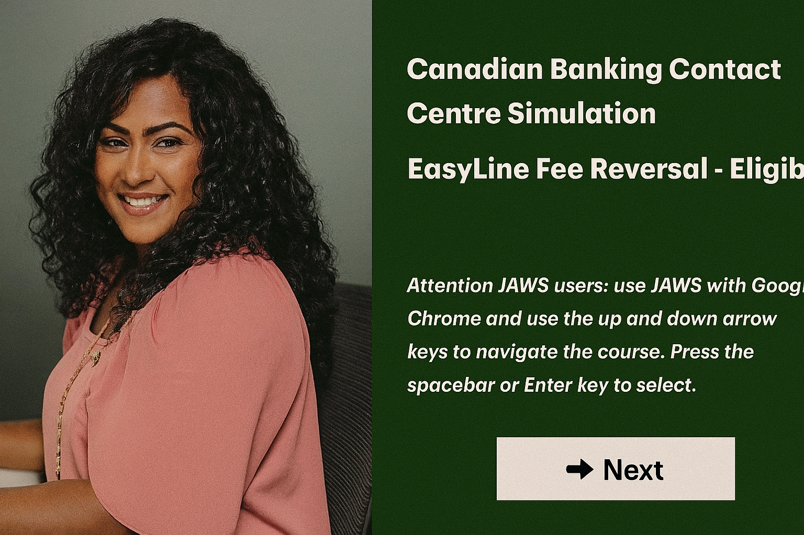
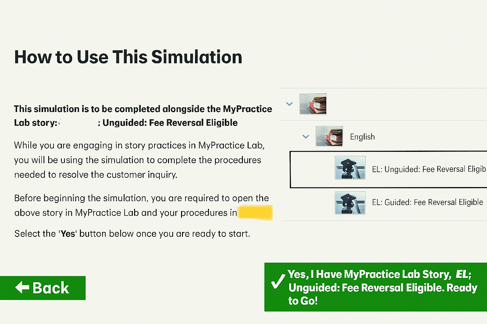
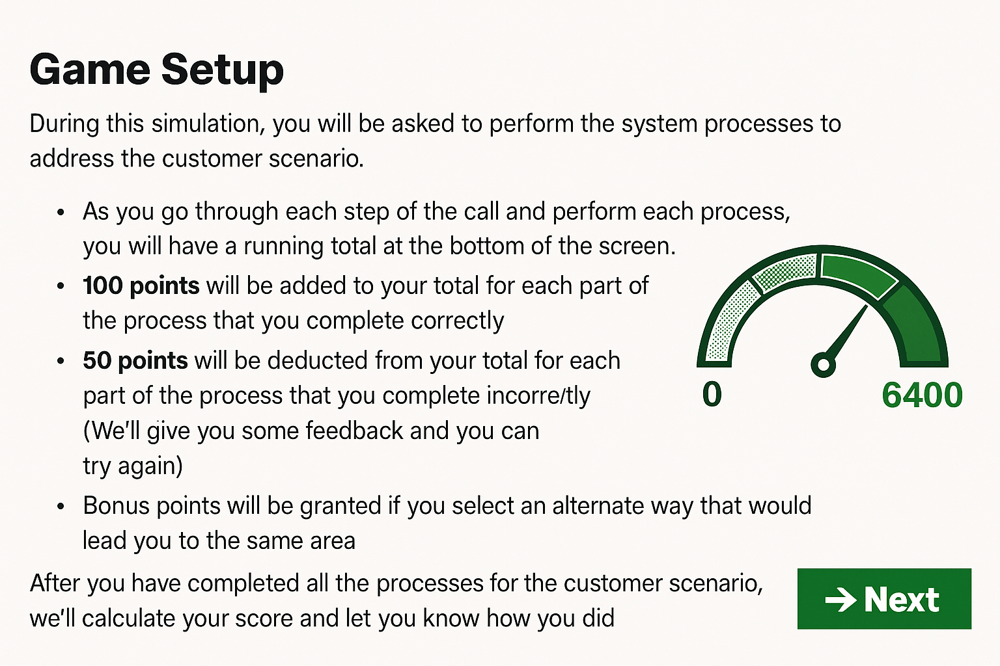

Training Designer & Developer | eLearning | xAPI | Change Enablement
I’m an L&D designer/developer focused on building practical, accessible learning—interactive simulations (Storyline, Rise 360), xAPI analytics, and blended programs that move the needle on performance. Recent work spans TD Bank’s modernization initiatives and large-scale rollouts (2,000+ learners). I care about clarity, data-driven iteration, and learner experience.
Tools: Storyline, Rise 360, Camtasia, HTML/CSS/JS, LMS/LRS (xAPI), accessibility (JAWS, WCAG), bilingual delivery (EN/FR).
Connect on LinkedInI'm a training designer and developer with a passion for creating impactful learning experiences. From interactive eLearning to performance support tools, I help organizations transform knowledge into action — with a focus on user experience, change adoption, and measurable outcomes.
This multi-module training program supported Enercare’s transition from ClickSoftware to IFS for field service management. I developed interactive eLearning using Articulate Storyline, including terminology alignment, system simulations, and xAPI tracking. The training improved onboarding efficiency and user readiness across over 2,000 technicians and dispatchers.
A custom knowledge check slide created to test user comprehension using feedback, branching, and clear instructions.
Visual navigation instructions designed to support learner onboarding for self-paced modules.
Scenario-based question used in a compliance training simulation for contact centre employees.
Have a project in mind or want to learn more? Let’s connect!
Visit My LinkedIn